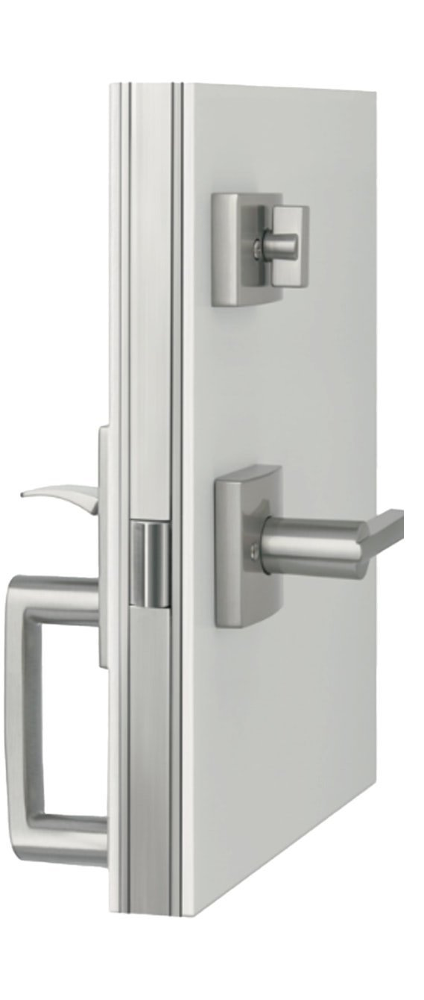
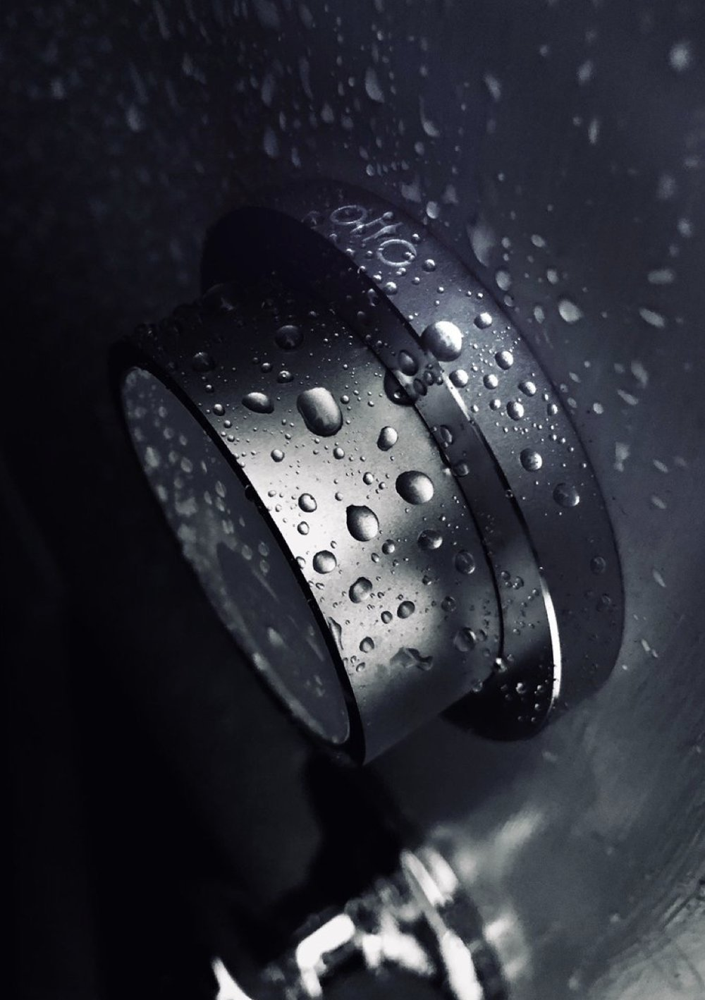
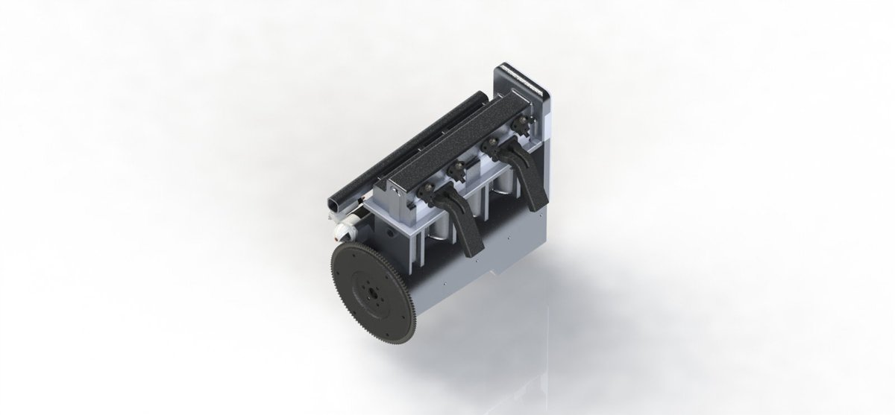

Eric Jadallah
Mechanical design & validation engineer · eric@jadallah.io · LinkedIn
I'm a design engineer at WedgeTLS, working on the Tyto full-length locking system. I design products and build the test rigs that prove them, both during prototyping and before they're in the world. Before WedgeTLS I worked on validation for the Model 3 battery line at Tesla and took a smart lock to production with Otto.
Each project below is a short write-up of how it was made and what it does. If you want to hear more, ask me.
1. Projects
-
 1.1 Deadbolt and Latch Validation WedgeTLS, 2026
1.1 Deadbolt and Latch Validation WedgeTLS, 2026A bench station built to cycle Tyto deadbolts and latches for days. Finds failures on its own by watching the data it produces.
-
 1.2 Full System Cycle Test WedgeTLS, 2026
1.2 Full System Cycle Test WedgeTLS, 2026A two-motor rig that takes a door through its paces, to prove the lock beats the current standard.
-

1.3 Tyto deadbolt WedgeTLS, 2020 to nowA deadbolt that locks the door to the frame from top to bottom, making the door as strong as a wall.
-

1.4 Otto Lock Otto LLC, co-op, 2016Production parts, test fixtures and vendor test lines for a smart lock.
-

1.5 Inline-4 engine Case Western capstone, 2017Senior capstone at Case Western, designing an I4 engine from scratch.

2. Experience
| WedgeTLS, design engineer and head of testing | 2020 to now |
| Tesla, manufacturing engineering intern | 2017 |
| Otto LLC, product development co-op | 2016 |
| Speck Design, intern | 2014 |
3. Patents
Named inventor on four door lock patents and applications, from my co-op at Otto and my work on Tyto.
-
Door lock assembly for a dwelling
US 12,747,617 · granted 2026 · WedgeTLS LLC -
Intelligent door lock system for use with a door assembly
US 12,416,180 · granted 2025 · WedgeTLS LLC -
Door lock assembly for a dwelling
US 2023/0272647 A1 · published 2023 · application for US 12,747,617 -
Intelligent door lock system for use with a door assembly
US 10,683,677 · granted 2020 · Otto LLC
Full list on Justia.
4. Education and tools
- BS in Mechanical Engineering, Case Western Reserve University
- Industrial design coursework, California College of the Arts
- SolidWorks, Siemens NX, GD&T, FAI, fixture design, 3D printing, Arduino, Python test software